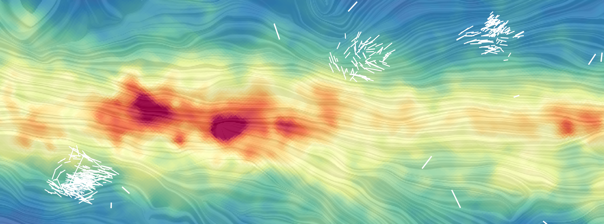

The Galactic magnetic field runs through the Milky Way, affecting all environments and important processes in the interstellar medium, such as energy balances, structure formation, cosmic ray trajectories, and angular momentum transport. Therefore, investigating the GMF is essential to understanding its role in these processes. The primary goal of this project is to study the properties of the Galactic magnetic field at various distances within the general diffuse interstellar medium using optical starlight polarization observations from the Interstellar Polarization Survey–General Interstellar Medium (IPS-GI) catalog. Starlight polarization from the IPS-GI allows us to understand better the structure and behavior of the magnetized interstellar medium at parsec and subparsec scales.
Complex organic molecules are the building blocks of life in the universe. They are formed in dense clouds within the interstellar medium and are present throughout every phase of star formation. This makes them valuable for studying both low- and high-mass star formation and evolution. These molecules are observed in the millimeter and submillimeter wavelength ranges. Radio interferometers like ALMA enable the observation of several complex organic molecules with high sensitivity and spectral resolution. However, efficient big data analysis methods are essential to process all this information effectively.